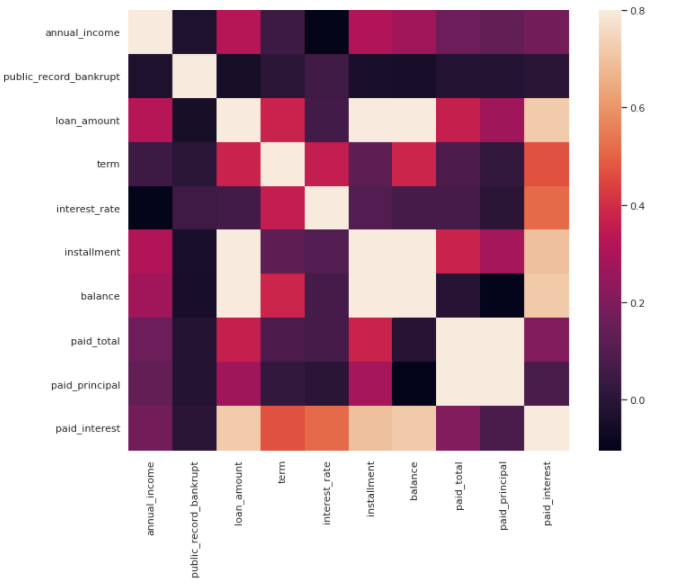
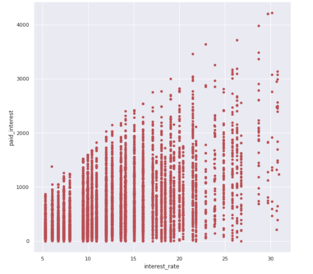
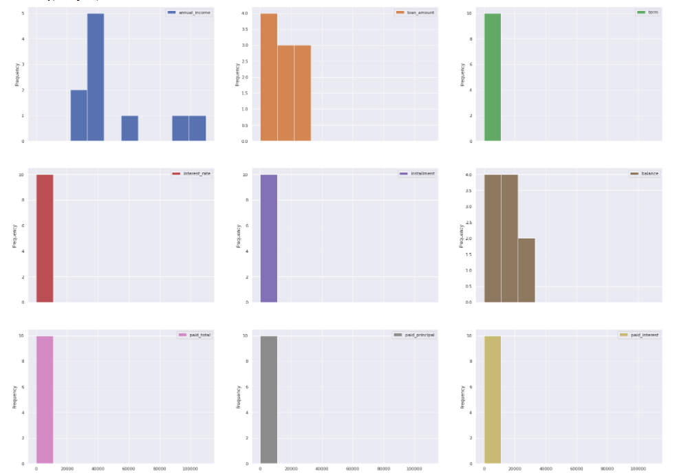
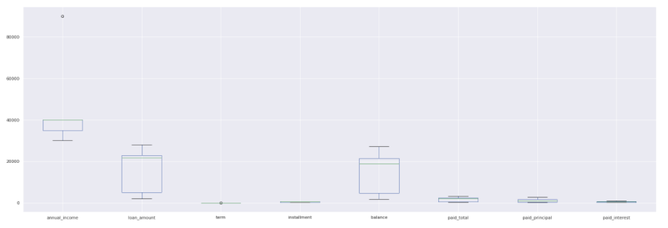
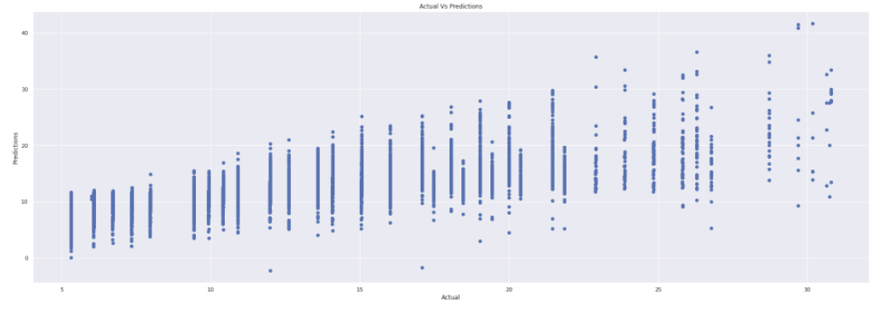

Case Study1: -
GitHub RepositoryDescription of Dataset and Issues with it:
The given data set represents thousands of loans made through the Lending Club platform. Lending Club platform is a platform that allows individuals to lend to other individuals. Someone who is a essentially a sure bet to pay back a loan will have an easier time getting a loan with a low interest rate than someone who appears to be riskier.
Data cleansing steps:
For data cleansing firstly, I replaced NA values of "emp_length", "balance" columns with the mean values of the whole column. Then columns "annual_income_joint", "debt_to_income_joint" having NA values is replaced with 0. After that some insignificant columns were dropped-off for accurate predictions.
Plots: -(Plots may appear blurr, but they are clearly visible in jupyter notebook)
The plot shown below tells about the correlation between all the variables. Since we are interested in predicting the interest rate therefore we will focus on relation corresponding to interest rate. It can be inferred that interest rate is most related to paid _interest and least related with annual_income.
The plot below shows a graph with a relation between interest rate and paid_interest. It can be inferred that as the interest rate increases, paid_interest also increases, which is quite obvious
The both plot below shows all the information about the variables
The plot below shows box plot for all the variables and tells the range, median for the values of the variables.
Visualizing the test results:
The last plot show the actual values vs the predicted values using linear regression.
